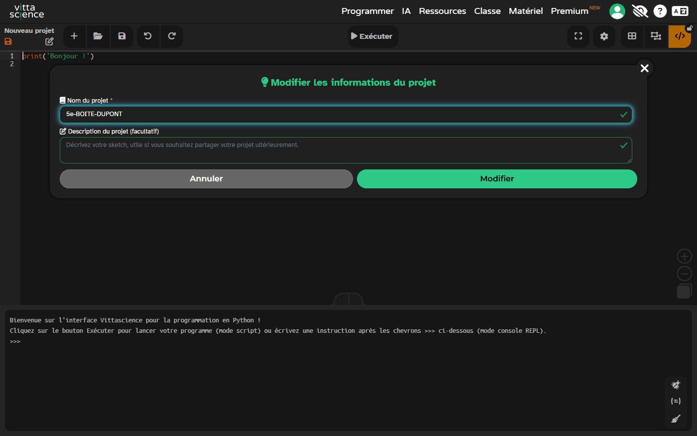
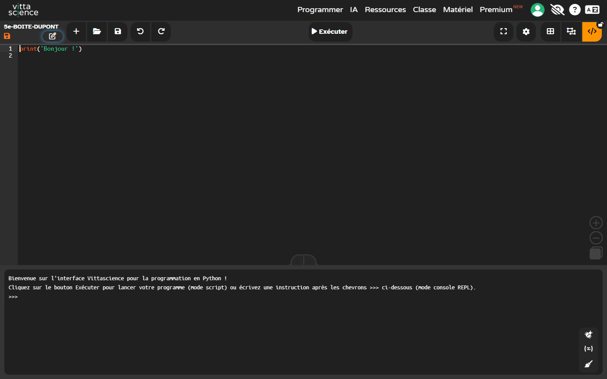
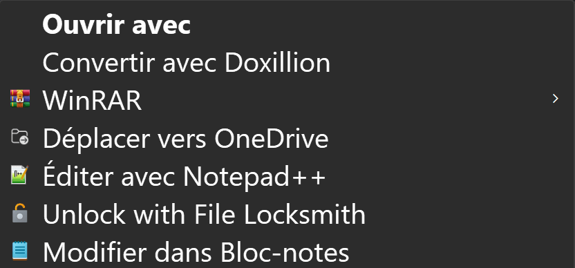
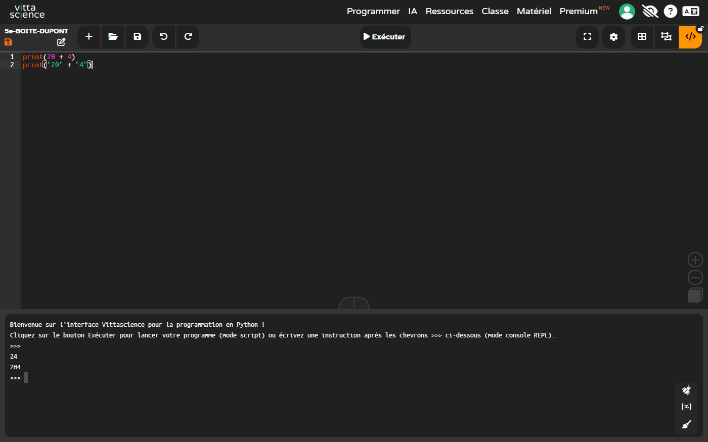
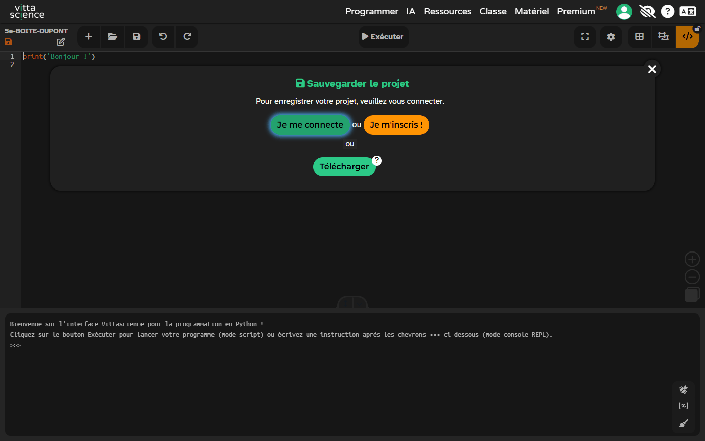
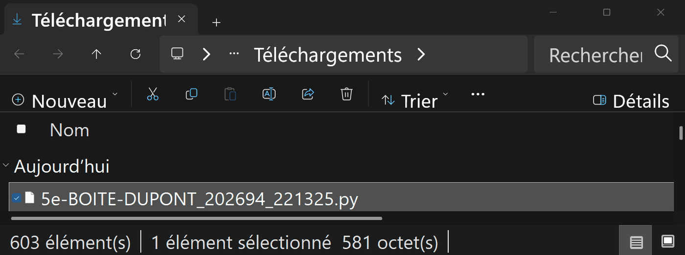
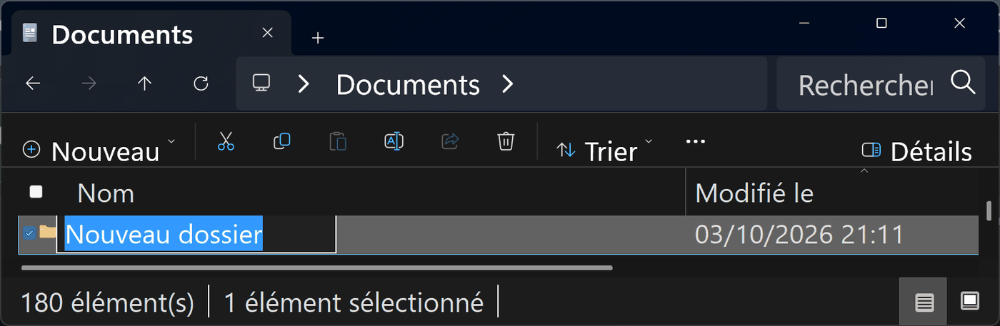
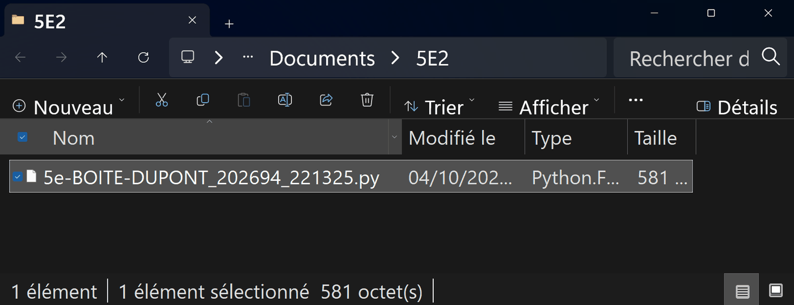

🧰 Avant de commencer (échauffement) — les quatre gestes de Vittascience
Quatre gestes à faire une fois, au début, et ta séance ne se perdra pas. Tu les as peut-être déjà faits une autre année : refais-les, c'est court. Et si tu ne les as jamais faits, tout est écrit ici — tu n'as besoin de rien d'autre.
- Ouvrir. Clique sur le bouton ▶ Ouvrir l'éditeur Vittascience dans un nouvel onglet de l'activité : l'éditeur Python s'ouvre dans un nouvel onglet, en mode code : tu écris ton programme au clavier. Une ligne
print('Bonjour !')est déjà là : efface-la avant de commencer.
Ce que tu dois voir : le bouton ▶ Ouvrir l'éditeur Vittascience…, dans le cadre de l'activité. Puis : clique-le ; garde cet onglet-ci ouvert pour lire la consigne. 
Comment savoir que c'est fait : une seule grande zone de texte, la console en bas, et le nom « Nouveau projet » en haut à gauche. Puis : efface la ligne print('Bonjour !'), que Vittascience met dans tout projet neuf, et tape ton programme à la place. - Nommer. Clique le crayon à côté du nom du projet, en haut à gauche, et remplace « Nouveau projet » par
5e-BOITE-TON NOM. Un projet sans nom est introuvable la semaine suivante.
Ce que tu dois voir : la fenêtre « Modifier les informations du projet », avec ton nom dans « Nom du projet ». Puis : clique Modifier. DUPONT est un exemple : mets ton nom. 
Comment savoir que c'est fait : ton nom apparaît en haut à gauche. C'est lui qui nommera ton fichier au geste 4. - Retrouver. La semaine suivante, ne rouvre pas ton fichier par Ouvrir → Depuis votre appareil : Vittascience remettrait
print('Bonjour !')à la place de ton programme. Ouvre ton fichier.py(celui du geste 4) dans le Bloc-notes : dans Documents, dans le dossier de ta classe, clic droit sur le fichier, puis Modifier dans Bloc-notes. Sélectionne ton programme à partir de sa première ligne de code, sans l'en-tête, puis Ctrl + C. Dans Vittascience, clique dans la zone de texte, Ctrl + A, puis Ctrl + V : ton programme remplaceprint('Bonjour !').
Ce que tu dois voir : le menu du clic droit, avec la ligne Modifier dans Bloc-notes. Clique-la. Si cette ligne n'est pas dans le menu : clique Ouvrir avec, cherche Bloc-notes dans la liste, puis Une seule fois. Les autres lignes dépendent du poste : ce sont celles de ce poste-ci. 
Ce que tu dois voir : le Bloc-notes, le nom de ton fichier dans l'onglet, l'en-tête de Vittascience, puis ton programme. Sélectionne seulement ton programme : de sa première ligne de code jusqu'à la fin, sans l'en-tête. Puis Ctrl + C. La fenêtre est recadrée sur sa partie gauche ; les deux lignes sont un exemple. 
Comment savoir que c'est fait : ton programme a pris la place de print('Bonjour !'), et Exécuter affiche dans la console ce qu'il affichait avant. Les deux lignes sont un exemple : c'est ton programme qui revient. - Sortir. Vittascience ne garde pas ton travail d'une séance à l'autre. Clique la disquette, puis Télécharger : un fichier
.pyau nom de ton projet arrive dans Téléchargements. Vittascience ajoute des chiffres à la fin du nom du fichier : c'est normal. Déplace-le dans Documents, dans le dossier de ta classe (exemple : 5E2). Si ce dossier n'existe pas encore, crée-le d'abord : dans Documents, Nouveau → Dossier, tape le nom de ta classe, puis valide.
Ce que tu dois voir : la fenêtre « Sauvegarder le projet », ouverte par la disquette. Ne te connecte pas et ne t'inscris pas : clique Télécharger, le bouton vert tout en bas. 
Ce que tu dois voir : le fichier .pyau nom de ton projet, dans Téléchargements — le navigateur l'y range sans rien demander. Clique-le une fois, puis Ctrl + X pour le couper. Les chiffres à la fin du nom sont ajoutés par Vittascience ; DUPONT est un exemple. La fenêtre est rétrécie pour ne montrer que ce fichier.
Si le dossier de ta classe n'existe pas encore : dans Documents, clique Nouveau puis Dossier. Un dossier apparaît, son nom surligné : tape le nom de ta classe (exemple : 5E2), puis appuie sur Entrée. La fenêtre est rétrécie : tes autres dossiers ne sont pas montrés. 
Puis : entre dans le dossier de ta classe (double-clic), puis Ctrl + V pour y coller ton fichier. Comment savoir que c'est fait : en haut, Documents › 5E2 ; dans la liste, ton fichier .py. Il n'est plus dans Téléchargements : il est rangé.
🔎 Séance 2 — Lire et TESTER le programme fourni (5e_C9.1)
Question directrice : le programme du responsable répond-il au besoin ? Comment le PROUVER ?
Prédire → tester → reporter, dans l'éditeur Vittascience
⏱ ~20 min🌐 Cette activité demande une connexion Internet — l'éditeur Vittascience est en ligne. Sans connexion : écris ton programme sur le cahier : la logique est ce qui compte, la saisie se fera à la séance suivante.
Expérience A : print(20 + 4)
Expérience B : print("20" + "4")
🧪 ② Ouvrir l'éditeur Python Vittascience — teste tes deux expériences dans l'onglet Vittascience
L'éditeur s'ouvre dans un nouvel onglet, en mode code : tu tapes ton programme dans la grande zone de texte, la console est en bas. Efface la ligne print('Bonjour !') qui s'y trouve déjà, recopie, puis ▶. (L'éditeur a besoin d'Internet ; tout le reste de la page marche hors ligne.)
▶ Ouvrir l'éditeur Vittascience dans un nouvel onglet
Vittascience n'accepte pas d'être affiché à l'intérieur d'une autre page : l'éditeur s'ouvre dans un onglet à part. Garde cet onglet-ci ouvert pour lire la consigne.
③ Je reporte :
💡 Aide niveau 1 — un indice
Regarde bien les guillemets. En Python, TOUT ce qui est entre guillemets est du TEXTE — même des chiffres.
💡 Aide niveau 2 — la démarche
Sans éditeur (version 🅲) : applique la règle. 20 + 4 = deux nombres → addition → 24. « 20 » + « 4 » = deux textes → collage → « 204 ». Reporte ces valeurs.
📖 Correction complète
A : 24 (addition de nombres). B : 204 — pas deux-cent-quatre : le TEXTE « 20 » collé au TEXTE « 4 ». Entre guillemets = texte, et le + COLLE les textes. Un compteur qui « colle » au lieu de calculer : voilà comment on affiche n'importe quoi.
Erreur classique : penser que « ce sont les mêmes chiffres, donc c'est pareil ». Pour l'ordinateur, 4 se calcule ; « 4 » s'affiche.
🎯 Critère de réussite : je sais prédire le résultat d'un + rien qu'en regardant les guillemets.
Le programme du responsable : réponds-il au besoin ?
⏱ ~25 minplaces = 24
montes = 3
descendus = 2
places = places - montes
places = places - descendus
print("Places libres :", places)
| Test | montes | descendus | Attendu | Obtenu | |
|---|---|---|---|---|---|
| T1 — personne ne bouge | 0 | 0 | 24 | — | |
| T2 — 3 montent, 0 descend | 3 | 0 | 21 | — | |
| T3 — 3 montent, 2 DESCENDENT | 3 | 2 | 23 | — |
💡 Aide niveau 1 — un indice
Regarde T3 : « attendu 23 » mais qu'as-tu OBTENU ? Puis relis la ligne 5 : un moins… pour des gens qui LIBÈRENT des places ?
💡 Aide niveau 2 — la démarche
Le technicien compare toujours ATTENDU (ce que le besoin demande) et OBTENU (ce que le programme fait). S'ils diffèrent sur UN SEUL test, le programme ne répond pas au besoin — même s'il « marche » sur les autres.
📖 Correction complète
T1 → 24 ✔, T2 → 21 ✔, T3 → 19 au lieu de 23 ✘ : la ligne 5 SOUSTRAIT les descendus alors
qu'ils LIBÈRENT des places. Verdict : le programme ne répond pas au besoin ; la ligne 5 doit
devenir places = places + descendus. Un seul test qui échoue suffit à conclure.
Erreur classique : s'arrêter après T1 et T2 (« ça marche ! ») — le bug attendait le premier visiteur qui descend. C'est POUR ÇA qu'on teste plusieurs cas.
🎯 Critère de réussite : je sais dire lequel des 3 tests a démasqué le bug, et pourquoi.